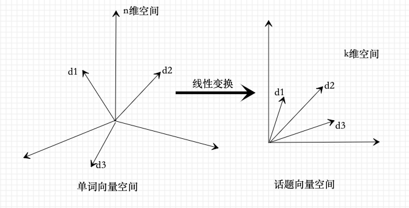
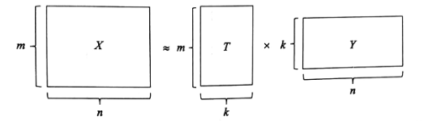

潜在语义分析(latent semantic analysis,LSA)是一种无监督学习方法，主要用于文本的话题分析，其特点是通过矩阵分解发现文本与单词之间的基于话题的语义关系。
潜在语义分析使用的是非概率的话题分析模型。具体地，将文本集合表示为单词-文本矩阵，对单词-文本矩阵进行奇异值分解，从而得到话题向量空间，以及文本在话题向量空间的表示。
非负矩阵分解(non-negative matrix factorization,NMF)是另一种矩阵的因子分解方法，其特点是分解的矩阵非负。非负矩阵分解也可用于话题分析。
单词向量空间与话题向量空间
单词向量空间
向量空间模型的基本想法是，给定一个文本，用一个向量表示该文本的”语义”，向量的每一维对应一个单词，其数值为该单词在该文本中出现的频数或权值；
给定一个含有n个文本的集合，以及在所有文本中出现的m个单词的集合。将单词在文本中出现的数据用一个单词-文本矩阵(word-document matrix)表示，记作X:
这是一个mxn矩阵，元素表示单词在文本中出现的频数或权值。此矩阵是一个稀疏矩阵。
权值通常用单词频率-逆文本频率(tf-idf)表示，其定义为：
式中是单词出现在文本中的频数，是文本中出现的所有单词的频数之和，是含有单词的文本数，df是文本集合D的全部文本数。
单词向量空间模型直接使用单词-文本矩阵的信息。单词-文本矩阵的第j列向量表示文本
其中是单词在文本 中的权值，i=1,2,…,m，权值越大，该单词在该文本中的重要度就越高。这是矩阵X也可以写作。
两个单词向量的内积货标准化内积(cosine)表示对应的文本之间的语义相似度。
因此，文本与之间的相似度为:
式中，表示向量的内积,表示向量的范数。
单词向量空间模型的局限性：体现在内积相似度未必能够准确表达两个文本的语义相似度上。因为单词具有一词多义(polysemy)以及多词一义(synonymy)，所以基于单词向量的相似度计算存在不精确的问题。
话题向量空间
两个文本的语义相似度可以体现在两者的话题相似度上。一个文本一般含有若干个话题。如果两个文本的话题相似，那么两者的语义应该也相似。
话题可以由若干个语义相关的单词表示，同义词(如”airplane”与”aircraft”)可以表示同一个话题，而多义词(如”apple”)可以表示不同的话题。那么，基于话题的模型就可以解决上述基于单词的模型存在的问题。
给定一个文本，用话题空间的一个向量表示该文本，该向量的每一分量对应一个话题，其数值为该话题在该文本中出现的权值。用两个向量的内积或标准化内积表示对应的两个文本的语义相似度。注意话题的个数通常远远小于单词的个数，话题向量空间模型更加抽象。事实上潜在语义分析正是构建话题向量空间的方法(即话题分析的方法)，单词向量空间模型与话题向量空间模型可以互为补充，现实中，两者可以同时使用。
话题向量空间
给定一个文本集合和一个相应的单词集合。可以获得其单词-文本矩阵X，X构成原始的单词向量空间，每一列是一个文本在单词向量空间中的表示：
矩阵X也可以写作。
假设所有文本共含有k个话题，假设每个话题由一个定义在单词集合W上的m为向量表示，成为话题向量，即：
其中是单词在话题的权值，，权值越大，该单词在该话题中的重要度就越高。这k个话题向量张成一个话题向量空间，维数为k。注意话题向量空间T是单词向量空间X的一个字空间。
话题向量空间T也可以表示为一个矩阵，称为单词-话题矩阵(word-topic matrix)，记作：
矩阵T也可以记作
文本在话题向量空间的表示
文本集合D的文本，在单词向量空间中由一个向量表示，将投影到话题向量空间T中，得到话题向量空间的一个向量，是一个k维向量，其表达式为：
其中是文本在话题的权值，，权值越大，该话题在该文本中的重要度就越高。
矩阵Y表示话题在文本中出现的情况，称为话题-文本矩阵(topic-document matrix)，记作：
矩阵Y也可以写作。
从单词向量空间到话题向量空间的线性变换
在单词向量空间的文本向量可以通过它在话题向量空间中的向量近似表示，具体地有k个话题向量以为系数的线性组合近似表示：
所以，单词-文本矩阵X可以近似的表示为单词-话题矩阵T与话题-文本矩阵Y的乘积形式。
这就是潜在语义分析：
直观上，潜在语义分析是将文本在单词向量空间的表示通过线性变换转换为在话题向量空间中的表示。这个线性变换由矩阵因子分解式(17-11)的形式体现。

下图示意性的表示实现潜在语义分析的矩阵因子分解：

要进行潜在语义分析，需要同时决定两部分的内容：
- 话题向量空间T
- 文本在话题空间的表示Y
使得两者的乘积是原始矩阵数据的近似。
潜在语义分析算法
潜在语义分析利用矩阵奇异值分解，具体地，对单词-文本矩阵进行奇异值分解，将其左矩阵作为话题向量空间，将其对角矩阵与右矩阵的乘积作为文本在话题向量空间的表示。
矩阵奇异值分解算法
单词-文本矩阵
给定一个文本集合和一个相应的单词集合。潜在语义分析首先将这些数据表示称一个单词-文本矩阵:
这是一个mxn矩阵，元素表示单词在文本中出现的频数或权值。
截断奇异值分解
潜在语义分析根据确定的话题个数k，对单词-文本矩阵X进行截断奇异值分解：
式中，，它的列由X的前k个互相正交的左奇异向量组成，是k阶对角矩阵，对角元素为前k个最大奇异值，是nxk矩阵，它的列由X的前k个互相正交的右奇异向量组成。
话题向量空间
在单词-文本矩阵X的截断奇异值分解式(17-13)中，矩阵的每一列向量表示一个话题，称为话题向量。由这k个话题向量张成一个子空间:
称为话题的向量空间。
文本的话题空间表示
将式(17-13)写作：
其中
由式(17-14)知，矩阵X的第j列向量满足：
式中是u矩阵的第j列向量。式(17-15)是文本的近似表达式，由k个话题向量的线性组合构成。矩阵的每一列向量：
是一个文本在话题向量空间的表示。
综上，可以通过对单词-文本矩阵的奇异值分解进行潜在语义分析
得到话题空间，以及文本在话题空间的表示。
非负矩阵分解算法
对单词-文本矩阵进行非负矩阵分解，将其左矩阵作为话题向量空间，将其右矩阵作为文本在话题向量空间的表示。
注意：通常单词-文本矩阵是非负的。
非负矩阵分解
若一个矩阵的所有元素非负，则称该矩阵为非负矩阵，若X是非负矩阵，则记作。
给定一个非负矩阵，找到两个非负矩阵和，使得
即，将非负矩阵X分解为两个非负矩阵W和H的乘积的形式，称为非负矩阵分解。(注意：此处也是一个对X的近似)。
假设非负矩阵X是mxn矩阵，非负矩阵W和H分别为mxk矩阵和kxn矩阵。假设，即W和H小于原矩阵X，所以非负矩阵分解是对原数据的压缩。
由式(17-17)知，矩阵X的第j列向量满足：
其中是矩阵H的第j列，是矩阵W的第l列，是的第l个元素，。
式(17-18)表示，矩阵X的第j列可以由矩阵W的k个列的线性组合逼近，线性组合的系数是矩阵H的第j列的元素。矩阵W的列向量为一组基，矩阵H的列向量为线性组合系数。称W为基矩阵，H为系数矩阵。
非负矩阵分解旨在用较少的基向量来表示较大的数据矩阵。
潜在语义分析模型
给定一个mxn非负单词-文本矩阵。假设文本集合共包含k个话题，对X进行非负矩阵分解。即求非负的mxk矩阵和kxn矩阵，使得
令为话题向量空间，表示文本集合的k个话题，令为文本在话题向量空间的表示，表示文本集合的n个文本。
非负矩阵分解具有很直观的解释，话题向量和文本向量都非负，对应着”伪概率分布”，向量的线性组合表示局部叠加构成整体。
非负矩阵分解可以形式化为最优化问题求解。
首先，定义损失函数或代价函数。
第一种损失函数是平方损失：
设两个非负矩阵和，平方损失函数定义为:
其下界为0，当且仅当A=B时达到下界。
另一种损失函数是散度(divergence)：
设两个非负矩阵和，散度损失函数定义为:
其下界也是0，当且仅当A=B时达到下界。A和B不对称。
当时，散度损失函数退化为KL(Kullback-Leiber)散度或相对熵，这时A和B是概率分布。
接着，定义最优化问题：
目标函数关于W和H的最小化，满足约束条件，即
s.t.
或者，目标函数关于W和H的最小化，满足约束条件，即
s.t.
算法
求解最优化问题(17-22)和问题(17-23)。
由于目标函数和只是对变量W和H之一的凸函数，而不是同时对两个变量的凸函数，因此找到全局最优(最小值)比较困难，可以通过数值最优化方法求局部最优(极小值)。
梯度下降简单但是收敛速度慢；共轭梯度法收敛快但复杂。
这里使用基于”乘法更新规则”的优化算法，交替地对W和H进行更新，其理论依据是下面的定理。
定理17.1 平方损失对下列乘法更新规则：
是非增的。当且仅当W和H是平方损失函数的稳定点时，函数的更新不变。
什么是稳定点？
定理17.2 散度损失对下列乘法更新规则：
是非增的。当且仅当W和H是散度损失函数的稳定点时，函数的更新不变。
定理17.1和定理17.2给出了乘法更新规则。定理的证明可以参阅文献:Algorithms for Non-negative Matrix Factorization
最优化目标函数是，为了方便将目标函数乘以，其最优解与原问题相同，记作：
应用梯度下降法求解。
首先求目标函数的梯度：
同样可得
然后，求得梯度下降法的更新规则，由式(17-28)和式(17-29)有：
式中，是步长。选取：
即得乘法更新规则
选取初始矩阵W和H为非负矩阵，可以保证迭代过程及结果的矩阵W和H均为非负。
算法17.1(非负矩阵分解的迭代算法)
输入：单词-文本矩阵，文本集合的话题个数k，最大迭代次数t；
输出：话题矩阵W，文本表示矩阵H.
初始化
迭代
对迭代次数由1到t执行下列步骤：
a)更新W的元素，对l从1到k，i从1到m按式(17-33)更新；
b)更新H的元素，对l从1到k，j从1到n按式(17-34)更新